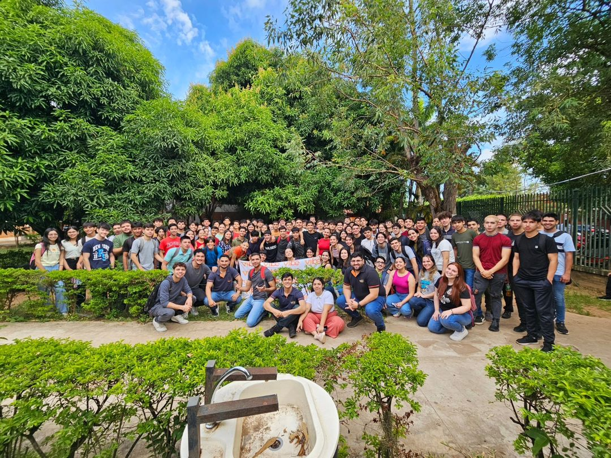

¿Qué es el cursillo Vibe?
El Cursillo Vibe es un servicio de enseñanza particular en Coronel Oviedo, especializado en preparar a estudiantes para el examen de ingreso a la Facultad de Ciencias y Tecnologías de la Universidad Nacional de Caaguazú. Se destaca por ser el cursillo número uno en la región, con la mayor cantidad de ingresantes, muchos de los cuales logran ocupar los primeros puestos en los exámenes de admisión. El cursillo también se distingue por su ambiente amigable y su pasión por ofrecer una enseñanza de calidad en instalaciones propias.